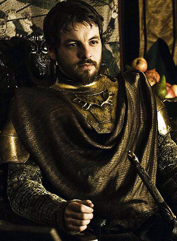
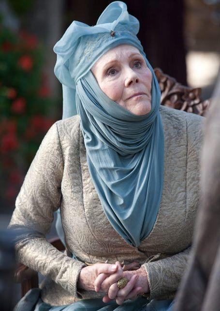

História
A Casa Tyrell
A Casa Tyrell a Jardim de Cima reivindicou domínio da Campina após a morte do Rei Mern Gardener no Campo de Fogo durante a Guerra da Conquista. Naquela época, os Tyrell eram os intendentes dos Gardener, e renderam Jardim de Cima a Aegon, o Conquistador. Eles foram recompensados com o castelo e com a posição de suseranos da Campina.
Durante a Dança dos Dragões, a Campina ficou dividida entre os Verdes e os Negros, com os Hightowers fornecendo grande parte do apoio para os verdes (junto com os Redwynes), todavia com os Rowans, Tarlys, Costaynes, Mullendores e Grimms apoiando os negros. A Batalha do Vinhomel e as Primeira e Segunda Batalhas de Tumbleton foram travadas na Campina.
Na Rebelião Blackfyre, vários apoiadores de Daemon Blackfyre eram da Campina, incluindo Sor Quentyn Ball e Lorde Gormon Peake, enquanto outros apoiavam Daeron II Targaryen.
A Rebelião de Robert viu a Campina fornecer muito da força pro-Targaryen, além de ser palco da Batalha de Vaufreixo, onde Robert Baratheon sofreu sua única derrota, pelas mãos de Randyll Tarly. Após a morte do Usurpador, muitos Lordes se juntaram aos Tyrell ao declarar apoio a Renly. Alguns, após o assassinato de Renly, juntaram-se a seu irmão Stannis, mas a maioria manteve-se neutra por um tempo, antes de marcharem junto a Tywin Lannister para derrotar Stannis na Batalha da Água Negra. Desde então, homens da Campina tem fornecido muito da força do Trono de Ferro, sob a instável aliança Tyrell-Lannister. A Campina permaneceu intocada pela guerra, até a Batalha das Ilhas Escudo, a qual marcou o início das campanhas de Euron Greyjoy ao sul. Desde então, Vilavelha e a Árvore vem sendo ameaçadas por homens de ferro.

Renly Baratheon.
Eventos recentes
Após a Batalha do Água Negra, os Tyrell se aproximaram oficialmente dos Lannister. Margaery Tyrell, filha de Mace Tyrell, Lorde da Campina, casa-se com Joffrey Baratheon, o então Rei dos Sete Reinos, para selar essa união. Porém, Joffrey é assassinado durante sua festa de casamento, a mando secreto de Olenna Tyrell, a grande cabeça por trás das tramas políticas da Casa Tyrell. Para Olenna, Jofrrey era um monstro maligno e não queria que esse fizesse mal à sua neta Margaery. Depois da ameaça de Stannis ter sido rechaçada, segundo Olenna; Joffrey "não era mais necessário" no jogo dos tronos.

Margaery Tyrell.

Olenna Tyrell.